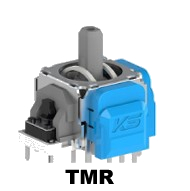

Stick Drift Repair

Hall effect sensor upgrades and joystick stick replacements for PlayStation, Xbox, and PC controllers. This service is performed by replacing the factory potentiometer-based joysticks with higher quality modules. We offer Tunnel Magnetoresistance (TMR) joysticks and Hall effect joysticks, which are a much better alternative to the factory joysticks.